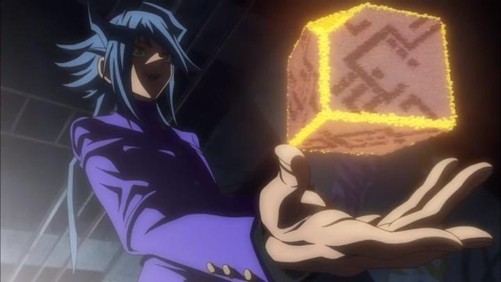

Disclaimer: This review covers the feature film "Yu-Gi-Oh! - The Dark Side of Dimensions," released in 2016 with a runtime of 129 minutes. Reviews for other films in this franchise are available in a different post. Minor spoilers for the original anime are in this review.I've already covered what "Yu-Gi-Oh!" was to me as a kid. The three feature-length movies have been re-released in America, and all three were in a new DVD set (yes, DVD's exist in 2025). I expected the films to be a fun time-machine, but not particularly good beyond nostalgia, and the first two films were exactly that. Even though the follow-up "The Dark Side of Dimensions" was much more recent (2016), I had no reason to suspect any better, when I watched it for the first time, decades after I had last seen the TV series on broadcast. I was wrong. "Dimensions" is good. Very good.Before I oversell it, keep in mind this is with the perspective against "Yu-Gi-Oh!" as a whole. This is a kid's show, built primarily to market an active trading card game. The franchise, as an adult, isn't particularly good, but it is entertaining. And as a movie, "Dimensions" is nothing like a Hayao Miyazaki or Mamoru Hosoda film. But comparing "Dimensions" against the rest of the "Yu-Gi-Oh!" franchise, it's shocking to see something to this level of quality at all. For fans of the original anime, "Dimensions" is essential. "The Dark Side of Dimensions" is a direct sequel to the end of the fifth season of the original "Yu-Gi-Oh!" series. It's important to have seen the series and know how it ended beforehand (I had only seen to the end of the third season as a kid, but got the jist of the rest fairly quickly). Set about a year after those events, Yugi and his friends are planning to graduate from high school and determine their next steps in life. Kaiba and his younger brother Mokuba advance their high-tech mega-coproration, but Kaiba is still obsessed with beating "The Pharoah," who has now left the modern world after his adventure ended. But then a student named Aigami, aka Diva, enters the picture - Yugi and his friends are barely able to recall his name, but don't know why. He has a secret dark history tied to Bakura's evil spirit from the series, and prepares to enact his plan against Yugi's friends and the world. Right away, the movie looks gorgeous. This is exactly how I'd want to see "Yu-Gi-Oh" if it were animated today, and with the full budget you would expect for a theatrical feature. All the classic (and crazy) fashion and poses is rendered and animated with exaggerated style and beauty. Characters are a little older here, so we see them in newer clothes and character designs, a refreshing change. There's a healthy amount of fanservice and deep cuts, like the appearance of Duke Devlin (remember "Dungeon Dice Monsters"?), and a handful of short but smooth jokes in the English dub. It's not overdone, and the experience is just a treat. At a whopping 2 hours, I rarely felt that the film was too long... I was having too much fun being a fan again.Diva is at the center of the plot, and he makes for a compelling villain. He has a emotional tragedy driving him to madness. When he goes evil, it's deliciously evil, almost to the point of being too dark for young kids. His confidence and arrogance in scenes against Kaiba are exciting. Of course, it's him, Kaiba and Yugi leading the plot, but other characters do get their own moments - Joey and Bakura for example... it's superfluous in the grand scheme of things, just to represent "the power of friendship" that Yugi's adventure always included, but it's effective in tricking the audience to its emotional power.  If there's anything to point out as a detriment, it is, surprisingly, the duels. The card battles are still exciting, but the movie streamlines them a bit, and against Diva especially, is loose with ignoring game rules. Also, the UI representing life-points, and the monster designs, have all gotten a big facelift, such that if you're used to certain images after hundreds of hours of watching the old anime, you might have trouble recognizing and following things. Better experts in the game might be able to speak to accuracy, but my impression is that the movie tried to express the "feeling" of the duels rather than explainable move-by-move plays. And another curious thing is the role of The Pharaoh, Yugi's spiritual double. Due to the story, he's not there at the beginning, and as the story continues, it teases his appearance right up to the very very end. If you don't like regular Yugi's naive and childish voice, you'll be disappointed that he doesn't come to take charge from the get-go. It's a brave move, and adds gravitas to how the original series' ending. And also makes the final ending of this movie all the more exciting as a (however unbelibable) cap to the series as a whole. But I'd be lying if I said I wasn't disappointed to not see more of The Pharaoh, or at least to HEAR his voice. Thanks to a strong dialogue script, and coming back to the classic actors, the English dub is the best its ever been. The music score doesn't fall into the trap of adding pop songs like the first movie, and rightfully elevates the film's drama (and the new remix of the American opening theme in the credits gave me chills). This all adds to the movie's production values being a great strength.I did watch this on DVD, and I was fine with the experience, but this really begs for a HD Bluray format. If there's any part of the franchise you should upgrade to Bluray, this is it. The DVD discs are barebones to boot, with only an English dub and subtlte options (no Japanese dub, no features, not even a fully-featured menu interface). "The Dark Side of Dimensions" is an impressive love letter and gift to the fans of that original series, which brought in millions of players that still follow the game today. It relies on your having seen and loved the original series, but this is definitely one of those cases where it's worth the effort to do so, just to enjoy this movie. If you've never touched the franchise, you can ignore my praise and move on, but existing or curious fans need to see this.
- "Ani" More reviews can be found at : https://2danicritic.github.io/ Previous review: review_Your_Name. Next review: review_Yu-Gi-Oh_-_The_Movie,_Bonds_Beyond_Time